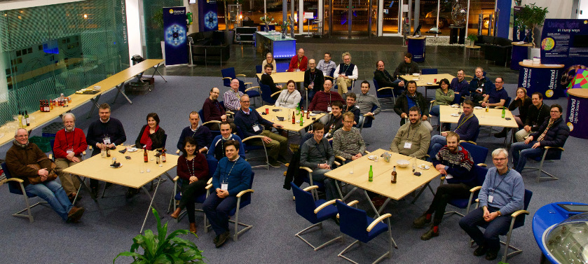

Welcome to ISPyB collaboration pages
ISPyB is a Laboratory Information Management System (LIMS) combining sample tracking and experiment reporting at synchrotron beamlines. It has been in production for many years, and is structured so as to make development and maintenance easy for software teams.
It was initially developed through a joint ESRF/e-HTPX initiative in 2003.
In 2017, a collaboration agreement has been signed for the development of ISPyB between the major synchrotron facilities in Europe.
Today ISPyB is actively supported by the following partners: ESRF, Soleil, DLS, MAX IV, HZB, EMBL, Global Phasing Ltd, ALBA.
-> See updates
Meetings minutes
F2F Meetings
ALBA November 2023

Status Reports
Joint MxCube-ISPyB Session
ISPyB Session
- New MX UI based on ICAT
- New MX backend based on ICAT
- Future ISPyB Architecture at Diamond
- Future of the ISPyB Collaboration
Steering Committee
ALBA June 2020
Overview presentations
- ispyb_alba_status_report_20200630.pdf
- ISPyBStatusSOLEIL-20200630.pdf
- lehtio_ISPyB_meeting-v3.pdf
- MAXIV_ISPyB_Meeting_Alba_2020.pdf
- Status_Updates_Diamond_Light_Source_ALBA_2020.pdf
- wierenga-ISPyB-developers-meeting-June-30.pdf
Minutes
EMBL Hamburg February 2020
Extra-ordinary ISPyB strategy meeting @ EMBL-HH (Hamburg, Germany), 12 February 2020
Overview presentations
- Introduction - Gleb Bourenkov
- ISPyB strategy - Gianluca Santoni
- SynchWeb for MX Diamond - Dave Hall
- ISPyB @ EMBL HH MX - Gleb Bourenkov
- Global Phasing's viewpoint on the ISPyB Collaboration - Gerard Bricogne
- ISPyB status at SOLEIL
- ISPyB at MAX IV - Jie Nan
Technical presentations
Minutes
HZB Berlin October 2019

Joint MXCuBE-ISPyB Meeting @ HZB (Berlin, Germany), 29.10. - 02.11.2019
Status reports
Other presentations
Minutes and reports
Lund March 2019
Only minimal information is available from the meeting.
Presentations and notes:
- Karl Levik, Diamond
- Olof Svensson, ESRF
- Gerard Bricogne, Global Phasing
- Daniel Sanchez, ALBA
- Committee meeting notes
ELETTRA September 2018

Agenda to be added soon
Status reports
Others presentations
- Oulu: home-lab LIMS updates - Ed Daniel
- EMBL Grenoble: Communication between multiple synchrotrons and home labs - Peter Murphy
- DLS: ISPyB web services
- Autoprocessing at synchrotrons: introduction
- Autoprocessing at synchrotrons: pipelines
- ESRF: Recent developments - Alejandro DeMaria
- ESRF: Data management - Alejandro DeMaria
Minutes and reports
- Developers Committee minutes
- MXCuBE-ISPyB joint discussion - autoprocessing and metrics
GPhL/DLS January 2018

Background
The meeting was held together with MXCuBE, with the following, joint Agenda. This time the meeting was organised on different lines to previous years, to put more emphasis on the scientific goals of the project and on how to make them feed through into the development priorities and the coordination of activities.Full list of presentations
Status reports
- EMBL-HH BioSAXS
- ESRF
- HZB - Presentation without slides
- ALBA
- ELETTRA
- DLS
- MAX-IV
- EMBL-HH
- EMBL-GR
- University of Oulu
- GPhL
CryoEM in ISPyB
- Pablo Conesa: Introduction to Scipion
- Connecting ISPyB and Scipion
ISpyB development highlights
- cryo-EM status, and evolution of EXI
- New column and tables for X-ray PDFs describing sample and capillary geometry
- Implementation of membrane proteins in ISPyB-SAXS
- Auto(re)processing at DLS and presentation of results via ISPyB/SynchWeb
- Data Reprocessing and User Preferences implementation in ISPyB
- Data processing with autoPROC and STARANISO and requirements for the full visualisation of requirements via ISPyB
Evolving scientific capabilities, logistical requirements and usere expectations
- Specific needs of serial MX in relation to ISPyB
- Towards a standardised API for exchange between home labs and ISPyB
- Juan Sanchez-Weatherby: The VMX-i beamline and ISPyB
- Managing high-density pins for the XChem facility with ISPyB
- The Instruct-ULTRA project
- Presenting GPhL Workflow metadata in ISPyB
The ISpyB collaboration in action
Minutes and reports
SOLEIL June 2017
Presentations to be added soon
ESRF January 17/18 2017

1st ISPyB collaborative meeting.
-> See presentations and minutes
Support or Contact
You want more information about ISPyB, please contact: ispyb.contact@gmail.com.
You are interested in ISPyB news ? subscribe to ISPyB information mailing list.
You are a developer and willing to participate to ISPyB development and discussions ? subscribe to ISPyB developers mailing list.